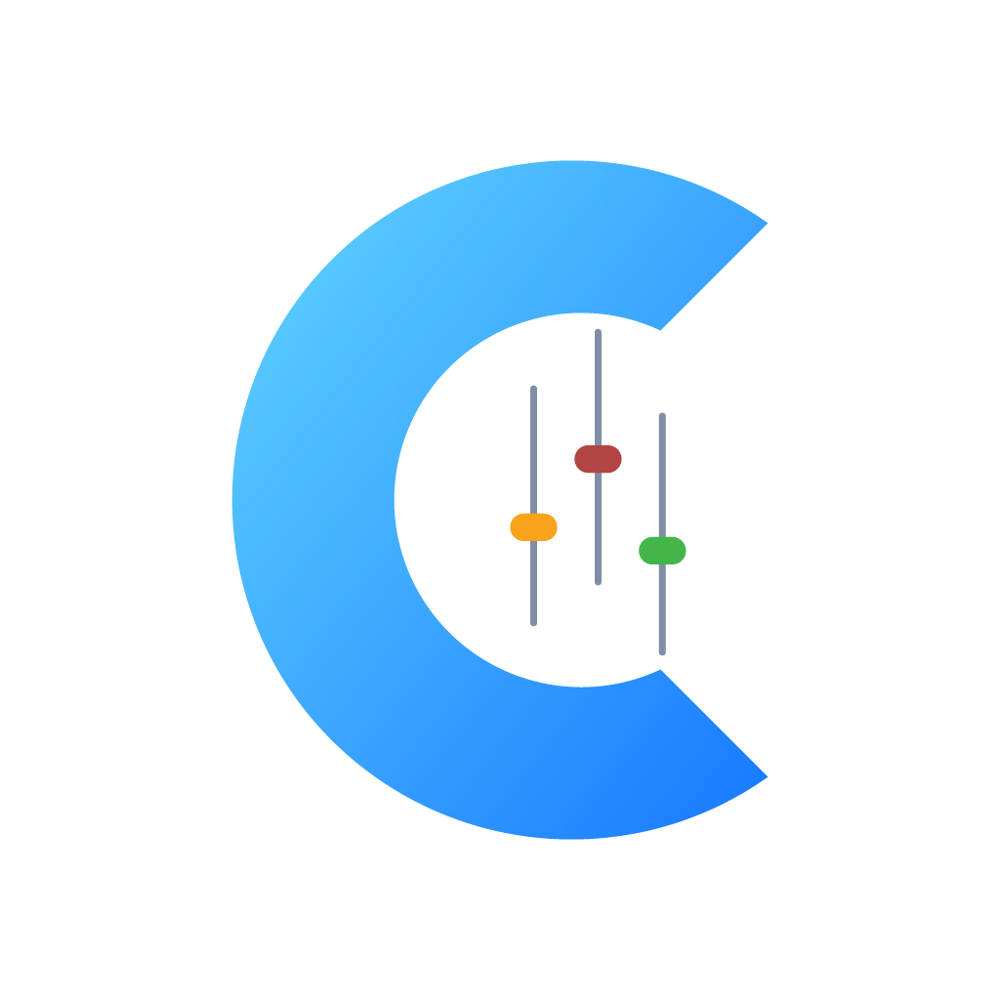

Politique de confidentialité
Dernière mise à jour : 22 septembre 2026
Blue Stream Controller est une application mobile permettant de contrôler une régie vMix depuis un appareil Android connecté au même réseau local.
Données traitées
L’application peut traiter localement l’adresse IP de l’ordinateur exécutant vMix, les ports de connexion, le mot de passe du Web Controller lorsqu’il est renseigné et les préférences de connexion.
Ces informations sont stockées localement sur l’appareil afin de faciliter les connexions ultérieures.
Utilisation des données
Les données de connexion sont utilisées uniquement pour établir une connexion avec l’instance vMix configurée, contrôler les fonctions disponibles et restaurer les paramètres de connexion.
Blue Stream Controller ne vend, ne loue et ne partage pas ces données avec des tiers.
Collecte à distance
Blue Stream Controller ne collecte pas de données personnelles sur des serveurs externes. L’application n’intègre actuellement aucune publicité, aucun outil d’analyse comportementale, aucun compte utilisateur obligatoire et aucun service de suivi.
Les communications réseau sont effectuées directement entre l’appareil de l’utilisateur et l’ordinateur exécutant vMix sur le réseau local.
Conservation et suppression
Les paramètres de connexion restent stockés sur l’appareil de l’utilisateur. Ils peuvent être supprimés en effaçant les données de l’application ou en désinstallant Blue Stream Controller.
Sécurité
L’utilisateur doit s’assurer que son réseau local est sécurisé et que l’ordinateur exécutant vMix n’est pas exposé inutilement à Internet.
Services tiers
Blue Stream Controller est compatible avec vMix, mais n’est ni affiliée ni approuvée par vMix Pty Ltd.
Contact
Pour toute question concernant cette politique, contactez-nous via la page Issues du dépôt Blue Stream Controller.